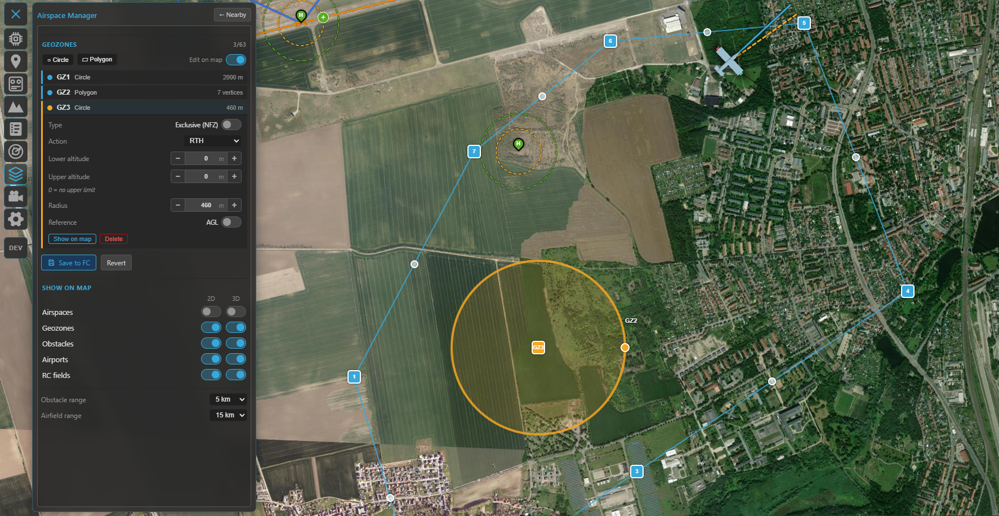
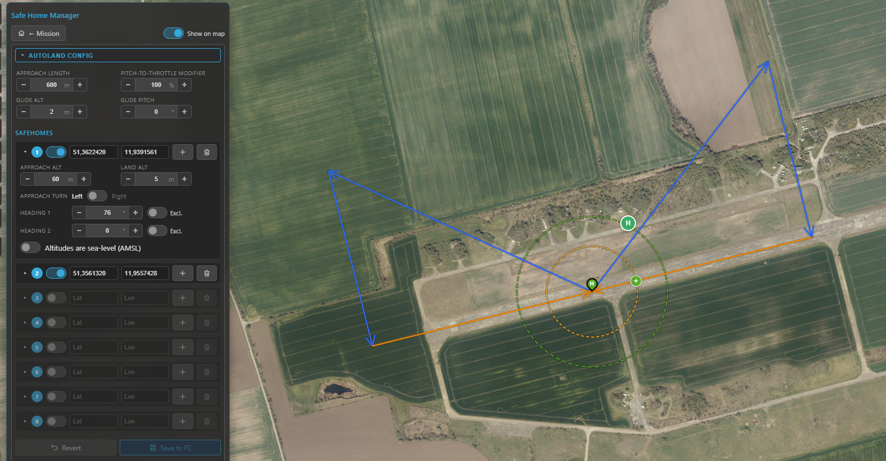
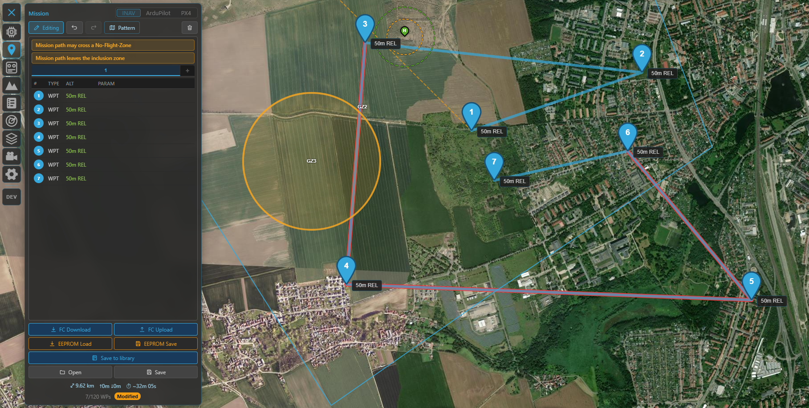

Safety¶
Kite groups the features that keep an aircraft out of trouble — terrain clearance, no-fly / keep-in areas, and automatic landing / return — into one place in this guide. Most of them are editors for settings that live on the flight controller itself: Kite reads them, lets you change them on the map, and writes them back. The FC does the actual enforcing in flight.
Which tools you get depends on the connected stack, because the three firmwares model safety quite differently:
| Capability | INAV | ArduPilot / PX4 |
|---|---|---|
| Keep-in / keep-out areas | Geozones (per-zone altitude band + action) | Geofence (geometry only; one global action) |
| Divert / return locations | (uses safe homes) | Rally points |
| Automatic landing | Safe Home + fixed-wing autoland (per-site editor) | via flight mode (Land / RTL) |
| Terrain clearance preview | ✓ | ✓ |
| Terrain correction (follow / check) | ✓ | ✓ |
| Plan-vs-airspace check | ✓ | ✓ |
The rest of this page walks through each.
Terrain clearance¶
Before any of the airspace tools, the simplest safety check is "will I hit the ground?" The Terrain tool (navigation rail) plots the elevation of the ground beneath a route or a flown track so you can sanity-check your above-ground clearance.
- Waypoints mode profiles your planned mission; Track mode profiles a live or loaded flight.
- It draws your flight path against the sampled terrain, with a clearance floor line; any stretch that drops below the floor is highlighted.
- It reports min clearance, max climb and distance, in MSL or AGL.

The Terrain tool: your route (or track) plotted over the ground beneath it, with the clearance floor and any below-clearance stretches flagged.
Needs elevation data
Terrain sampling needs the online terrain source; out of coverage or fully offline it reports terrain data unavailable. This is a planning aid — it does not command the aircraft.
The same tool can also correct waypoint altitudes to hold your clearance target (Terrain Follow / Clearance Check), analyse the radio link against the terrain, and profile a flown track. See the dedicated Terrain & RF analysis guide for the full feature.
Keep-in & keep-out areas¶
Both firmware families let you define areas the aircraft should stay inside (inclusion / flight zones) or out of (exclusion / no-fly zones). Kite edits them on the map and uploads them, but the two models differ enough to be worth understanding.
Throughout Kite, the colours are consistent: inclusion = blue, exclusion = amber.
INAV — Geozones¶
Geozones are INAV's onboard airspace fences (firmware 8.0+). Edit them from the Airspace tool; they show as the Geozones layer (toggle it in the panel, default on — and they're always shown while you're editing a mission).
What a geozone carries:
- Shape — circle or polygon.
- Type — Inclusive (flight zone, keep in) or Exclusive (no-fly zone, keep out).
- Altitude band — a per-zone lower and upper altitude (upper
0= no limit), referenced to AGL (above launch) or AMSL. - Breach action — what the FC does at the boundary: None, Avoid, Position hold or RTH. The map even reflects the action in the line: dashed/thin for None, solid for Avoid, solid-thick for Position hold / RTH, with a translucent fill on enforcing zones.
In flight INAV enforces these itself — it steers around no-fly zones autonomously in self-levelling modes and even plans an RTH path that avoids them. Up to 63 zones (sharing a pool of 126 vertices) fit on the FC.

Geozones in the Airspace Manager: the zone list (type, altitude band, action) and the blue inclusion / amber exclusion areas on the map.
Editing is map-first, just like the mission planner: add a circle or polygon, drag its handles, click an edge to insert a vertex, or type exact coordinates in the popup. The panel sets the type, altitude band, reference and action. Editing is locked while armed.
Saving writes every zone to the FC, stores it to EEPROM and reboots the flight controller — geozones only take effect after a restart, so the link drops and reconnects. Kite checks your zones first (valid shapes, vertex/zone limits, sensible altitude band) and fixes polygon winding for you.
ArduPilot / PX4 — Geofence¶
ArduPilot and PX4 expose a geofence over MAVLink. Edit it from the same Airspace tool (Geofence layer). The geometry concept is the same — inclusion / exclusion × polygon / circle, plus an optional return point (ArduPilot) — and the on-map editing reuses the geozone UX exactly (drag handles, vertex insert, coordinate popup, armed-lock).
The difference is in the model: on ArduPilot/PX4 the altitude limits and the breach action are not part of each zone — they're a single set of global parameters that apply to the whole fence. Kite reads and writes the core ones in the panel's Fence parameters block, choosing the right names for the connected autopilot:
- ArduPilot — fence enable, breach action, max altitude, home radius (and min altitude / margin).
- PX4 — fence action, max horizontal and max vertical distance.
Saving uploads the fence and writes the changed parameters; no reboot is needed.
Two ways to express the same idea
INAV carries each zone's altitude band and breach action with the zone itself, so different areas can have different ceilings and reactions — a finer-grained model than the single global action ArduPilot and PX4 apply across the whole fence. If you fly both, plan around that: on the MAVLink side a fence is geometry plus one global rule.
Rally points (ArduPilot / PX4)¶
ArduPilot and PX4 also support rally points — alternate return/divert locations the FC can use instead of home (e.g. for RTL). Kite edits them on the same Airspace panel: green R markers you drag on the map, each with a lat/lon and altitude, plus the rally parameters (use limit, include home). They load on connect and upload on save. INAV has no separate rally concept — it returns to home or to a safe home (below).
Automatic landing — Safe Home & Autoland (INAV)¶
This is an INAV-only system, and one of its more sophisticated ones. A safe home is a stored landing site (lat/lon); for fixed wings, INAV (7.1+) can fly a complete wind-aware automatic landing there on RTH — loiter, downwind, base, final, glide and flare. Kite gives you the editor for both. (On ArduPilot and PX4 it works differently: multirotors and VTOLs land automatically on a Land / RTL command, while fixed wings autoland only as part of a preloaded mission — so there's no separate per-site landing editor like this one.)
Open it from the Mission tool: the INAV mission panel has a home button that opens the Safe Home Manager.
- Display works on any connected INAV — safe homes and their guard rings are downloaded on every connect and drawn on the map.
- Editing + autoland configuration needs INAV 7.1+ (validated through 9.1; newer shows a hint).

The Safe Home Manager: the collapsible autoland configuration on top and the eight safe-home slots below, each with its own approach settings.
The safe-home slots¶
Up to eight slots. Each holds a position (set it by dragging on the map, typing coordinates, or Set here to drop it at the map centre) and, when autoland is available, a per-site approach:
- Approach / land altitude — the pattern entry height and the touchdown height.
- Approach turn — left or right circuit.
- Heading 1 / 2 — the allowed landing directions. Each can be bidirectional (the opposite
heading is allowed too) or marked exclusive (that direction only);
0disables it. INAV picks the one most into wind. - Sea-level reference — interpret this site's altitudes as AMSL instead of relative; toggling it re-converts the values using the terrain elevation at the point.
A per-slot Clear empties a slot. Use the toolbar's Show on map toggle to hide/show the overlay.
The autoland configuration¶
The collapsible Autoland Config box holds the global approach parameters: approach length, pitch-to-throttle modifier, glide altitude / pitch, and — only if the aircraft has a rangefinder — flare altitude / pitch (no rangefinder, no flare phase).
On the map¶
For each enabled safe home Kite draws:
- the safe-home marker (a green/grey "H" teardrop),
- a green max-distance ring (the
safehome_max_distanceguard) — shown only while disarmed, - a yellow loiter ring at the approach altitude, and
- the approach path itself, drawn as a real descent in 3D: level downwind, a ~⅓ step-down on base, then a linear final to the ground at the touchdown point (blue downwind/base, orange final).
This renders on both the 2D and 3D maps.
Saving¶
Edits build up in a working copy — nothing is live until you press Save to FC, which writes the whole package (safe homes + approaches + autoland settings) to the FC and saves it to EEPROM in one go. Revert drops your unsaved changes.
Plan-vs-airspace check¶
When you have geozones (INAV) or a geofence (ArduPilot/PX4) set, Kite checks your planned mission against them automatically and flags trouble — these are hints, never a blocker:
- A warning bar above the waypoint list (e.g. launch/home is inside a no-fly zone, mission path may cross a no-fly zone, mission path leaves the inclusion zone).
- The offending legs are drawn red on both the 2D and 3D maps.
The check is altitude-aware: a leg that passes over a zone's ceiling, or under an exclusion zone, isn't flagged. Inclusion zones are only enforced when your launch/home actually sits inside one (matching how INAV behaves).

The plan-vs-airspace check: a warning bar and red legs where the route would breach a zone.
These are previews, not the last word
Kite's checks help you catch mistakes before you fly, but the flight controller is what actually enforces fences, geozones and landings. Always confirm the configuration on the FC and test conservatively.
Where to go next¶
- Plan a route that respects all this: Missions.
- See the approach and zones in 3D: 3D map.
- Aeronautical airspace (airports, obstacles) lives in the same panel: Radar & ADS-B.